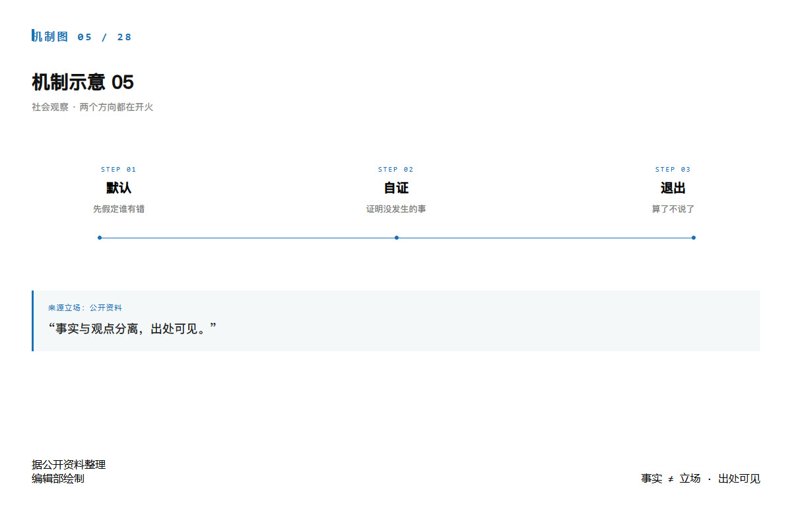

对轰的账，寄给没上场的人
社会观察 · 两个方向都在开火
骂赢那天，他收到一条私信：你昨天挂的那个人，是我同事。
具体私信不转述，也不核实。下面只算结构账：四张账单来自对公共骂战的观察归纳，没有公开统计，发生概率也说不准。引文是编辑部的结构性概括，不是文献原话。写它不为劝谁退出。
但这事和今天的你，有关系。四张账单里，大部分不由发起对轰的人付。你没上场，却可能在为别人的胜利买单——尤其是当你只是带着「男人」这个标签，在日常里过日子。
用规则打规则的人，从出手那一刻起也站在规则里。挂人、做合订本、翻旧账、举报，每一项技术都能原样打回来。风向一变，攻击方转眼就成了被清理的那个。男人和女人共用同一套武器库，没有谁有安全屋。
还有一层心理账。长期使用「让对方疼」的人，会慢慢把它当成沟通的默认方式。骂战里长大的表达者，回到日常对话还带着骂战的句法。这不只发生在男人身上，武器会改变任何一个持枪的人。
对轰的火力按标签、不按个体。男性标签、女性标签、地域、职业，一枚导弹覆盖几十万人。绝大多数人没上场，只是带着标签过日子，却要在相亲、职场、家庭群里反复中弹。他们既没参战，也没有还手的机会。
往男性标签上扫，常见的句式是把整个性别一起定性，具体的男人无论怎么做，都得先自证自己是例外。这种伤害不剧烈，但持续，而且很难举证——没有人真的指着他说那句话。
同一个机制换到另一个方向，是把女性标签打包成另一副样子。被扫中的普通女性同样没上场，也要反复解释自己不是标签里那个人。两边看到的都是「对方先开的火」，其实都在开火。谁先谁后、谁多谁少，没有统计可依。
这里必须停下，防止滑成单向控诉：误伤的账单两个方向都在开。前面扫普通男人，这里扫普通女性，用的是同一套打包逻辑。能确定的只有一点——标签一旦成了靶面，个体就消失了。
📌 一个值得记住的判断
扫射按标签不按个体，子弹不认人。两个方向都在开火，没有哪边的误伤可以单独记账，也没有哪边的子弹会绕开沉默的多数。
规则层作战一旦成了默认战术，事实层的东西就没人做了。核查报道成本高、回报低，长文没人读完，程序文书没人转发。这些慢内容是公共讨论的地基，枯竭之后，所有议题都只剩立场对射。
塌方的受害者包括赢家。一个男人赢下一场又一场，回头发现没有一件事被真正查清。地基被掏空，站在废墟上宣布胜利，胜利本身也变得不可信。这是四张里最安静的一张，因为它不疼，只是慢慢什么都没有了。
每一次「成功」都在给对手演示：温和没用，只有更狠有用。均衡点于是不断上移——今天挂人，明天翻三代，后天线下。这是军备竞赛，没有单方能退出，谁先克制谁吃亏。
终局很清楚：所有人用最大音量说话，所有人的话都不可信。到那一步，对轰不再指向任何具体问题，只剩音量的比拼。发声的男人以为自己在争对错，其实只是在给下一轮的自己加码。
四张账单摆完，话可以说硬一点：对轰是止痛药，不是治疗方案。止痛药值得理解，不值得推广。有人会问，被结构性闭嘴的男人就该忍着？不该。但算不清账的反击，最后都会变成自己反对的那种暴力。
如果你读完觉得扫兴，这份扫兴就是它的功能。这里不提供爽感，提供账本，更不是一份行动指南。看清楚账单，不是为了让你放弃说话，是为了让你知道自己在付什么、谁在跟你一起付，然后才谈得上选择。
对男人这类视角来说，最隐蔽的代价是：你越用力地用对轰自证，越难回到那个能被认真倾听的位置。误伤是双向的，代价却各自结帐。把账看清，已经比冲上去多了一步。
编辑部结构性概括，非文献原文
「当所有人都在对轰，最贵的公共品是「可信」。」
公共品视角：可信是所有人都需要、却没人愿意出钱维护的东西。

▲ 对轰的四张账单（编辑部绘制）
✍️ 这四张账单，哪一张最让你意外？
是反噬、误伤、塌方，还是螺旋？评论区说说。觉得有用，点个赞、点个「在看」，转给也在算这笔账的人。
下一篇：一段话里的责任四变，和一场程序走了四年的对照。
资料来源
「回旋镖」为机制比喻，指策略使用者承受同规则回击的风险；无公开统计，发生概率不作预测。
「误伤按标签不按个体」为机制观察，两个方向上的扫射并陈；「军备竞赛」「全员最大音量均衡」为博弈论比喻层面的判断。
四张账单（反噬／误伤／塌方／螺旋）为分析性归纳框架，非实证预测；具体骂战与个案指控不予转述。
社会观察，不站任何性别立场。事实据公开来源，未证实指控不转述、不评价。拆解规则是为了理解，不是行动指南。